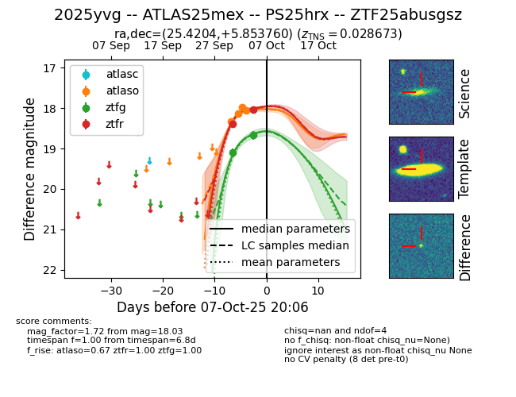
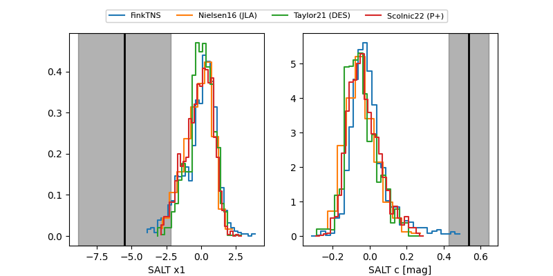

FINK: ZTF25abusgsz
Lasair: ZTF25abusgsz
ALeRCE: ZTF25abusgsz
TNS: 2025yvg
YSE: 2025yvg
ZTF25abusgsz (ztf,fink)
2025yvg (tns,yse)
ATLAS25mex (atlas)
PS25hrx (panstarrs)
equatorial (ra, dec) = (25.4204,+5.85376)
galactic (l, b) = (145.0046,-54.85034)


last atlaso=18.05, ztfg=18.67, ztfr=18.03
4 atlaso, 2 ztfg, 2 ztfr detections